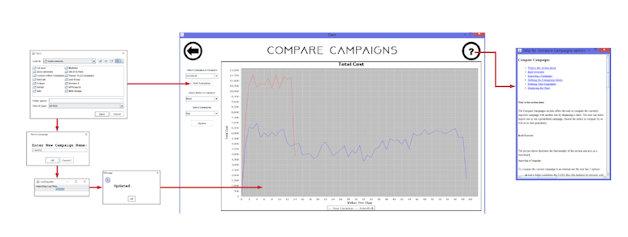
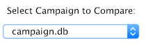
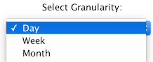
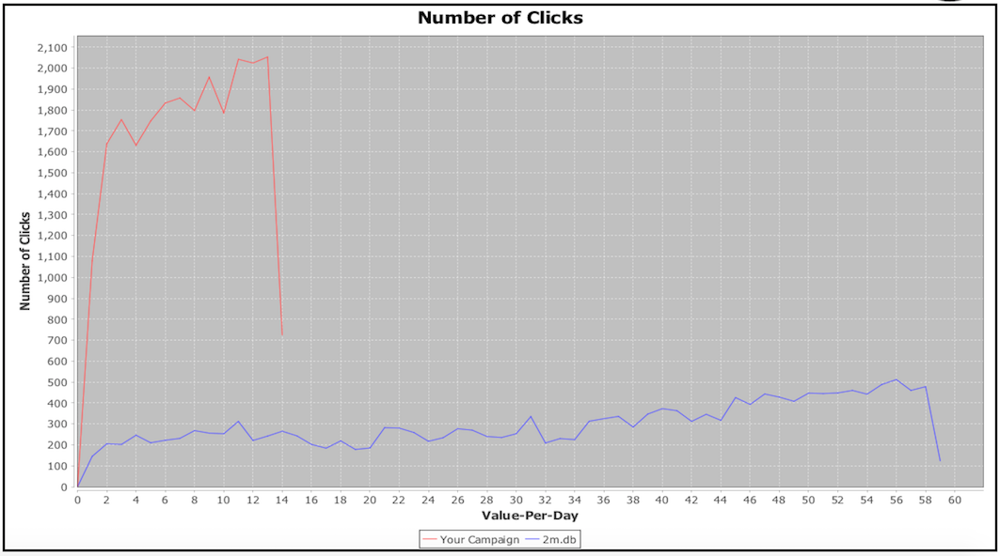

The Compare Campaigns section offers the user to compare the currently imported campaign with another one by displaying a chart. The user can either import one or use a predefined campaign, choose the metric to compare by as well as its time granularity.

The picture above illustrates the functionality of the section and acts as a storyboard.
To compare the current campaign to an external one the user has 2 options:
After that, the user locates the folder with the 3 files and presses Confirm. If the folder does contain the CSVs the user is asked to enter a name for his newly imported campaign. After the user enters a name, the campaign appears in the dropbox:

Once the campaign has been chosen, next step is to choose the comparison metric. The metric can be chosen from the dropbox:

Choosing one by clicking on means that both campaigns will be compared based on that metric.
By default, the comparison will happen by "day" but if the user wants to data to be by weeks or by month this happens by choosing the correct time granularity from the dropbox:

The final step is displaying the graph and it is as simple as pressing the Update button:

and a line chart appears on the right.
